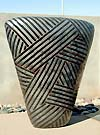
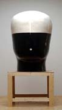
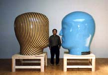

| Jun Kaneko
American sculptor

Born
and raised in Japan, Jun
Kaneko moved to the United States to study ceramics. Not
able to speak the language, he was forced to focus purely on the
visual. His painting background is evident in his work, where his
monolithic ceramic “dangos” (the Japanese word for dumpling)
become three-dimensional, inflated canvases. Working primarily with
graphic, yet painterly, lines and dots, his rhythmic designs are
analogous with the Japanese Shinto concept of the “Ma”,
which loosely translates into “attachment through space”.
Constructing pieces that weigh as many as 1,000 lbs,
Kaneko’s simplified forms and control of the material make
the pieces seem effortless. His technical aptitude comes from years
of patience and an understanding of the temperamental medium. After
construction, his work generally takes four months of drying time
and up to a 35-day firing process. In final stage of production,
out of a group of 10 pieces, only two to three actually survive.
Peter
Voulkos, Kaneko’s professor at the University of California
at Berkley and an influential artist in his own right, described
Kaneko’s work: “His accomplishments are unrivaled in
the field of ceramic art. His technical achievements alone have
redefined the possibilities the medium has to offer.” He then
goes on to say, “Kaneko’s ceramic works are an amazing
synthesis of painting and sculpture. His works are enigmatic and
elusive, simultaneously restrained and powerful, Eastern and Western,
static and alive, intellectual and playful, technical and innovative”
One of Kanekos’ most impressive pieces in this exhibition
departs from his “dango” studies. A figurative head
sculpture measuring over 8 feet tall engages in a silent conversation.
Venerated on a pedestal, it recalls, yet abstracts Buddhist iconography.
Kaneko’s
exhibition history spans over 40 years. He is included in public
collection at Cranbrook Academy of Art, De Young Museum, Detroit
Institute of Art, European Ceramic Work Centre, Fine Art Museum
of San Francisco, Oakland Museum, Philadelphia Museum of Art, Smithsonian’s
Renwick Gallery, and Japan’s Wakayama Museum of Modern Art.
Bentley Projects will host an opening reception for the artist on
Friday, January 7 from 6 to 9 pm.
Article and images courtesy Jessica Eckert, Bentley
Gallery/Bentley Projects. Images ©
Jun Kaneko.
More Artists of the Week
More Articles |
{kind=link}
{kind=link}
{kind=link}
{kind=link}
{kind=link}